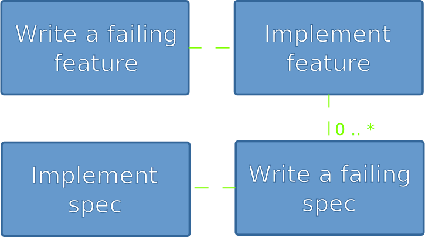

BDD with Cucumber and RSpec
Marcus Ahnve
http://marcusahnve.org
marcus.ahnve@valtech.se
marcus@ahnve.com
@mahnve

About me
- Playing Agile Coach
- Developed software professionally since 1996
- Rubyist
Q: How many are using Cucumber
Q: How many have heard of Cucumber
Q: How many are using RSpec
Q: How many have heard of RSpec
Q: How many are doing TDD/BDD?
Q: How many think I am asking too many questions?
My BDD history
- Java and Ruby developer
- TestDox, Joe Walnes
- Dan North
- Dave Astels, Aslak Hellesøy, David Chelimsky
$ rake
Finished in 27.79 seconds
285 examples, 0 failures
152 scenarios (152 passed)
1363 steps (1363 passed)
4m4.505s
Finished in 8.06 seconds
77 examples, 0 failures
Why automatic testing?
- Make sure it works now
- Make sure it works whenever
Why TDD?
- Make sure it works now
- Make sure it works whenever
- Know when you're done
Method Testing
class Klazz
def method
do_something
end
end
class KlazzTest
def setup
@klazz = Klazz.new
end
def test_method
result = @klazz.do_something
assert_equal("expected", result)
end
end
The Context Problem
class KlazzTest
def setup
@klazz = Klazz.new
end
def test_method
result = @klazz.do_something
assert_equal(:expected, result)
end
def test_another_context
klazz = Klazz.new(:constructor_args)
assert_equal(:expected_2, klazz.do_something)
end
end
Why BDD?
- Make sure it works now
- Make sure it works whenever
- Know when you're done
- Build just what's needed
- Design from functionality
- Documentation - why
What is BDD?
"BDD is TDD done right"
"TDD means 'write the test first'. BDD takes this idea to a more general level: 'write the client first' (the outside)"
- Aslak Hellesøy
The BDD Flow

Thank You!